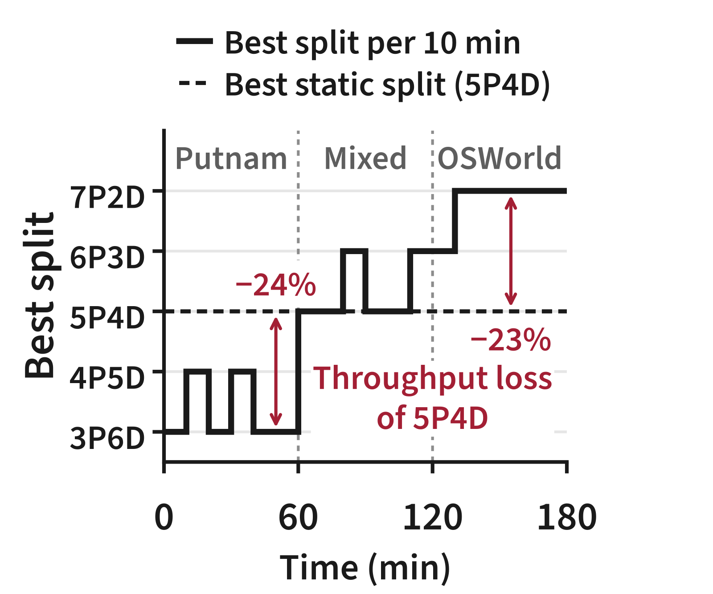
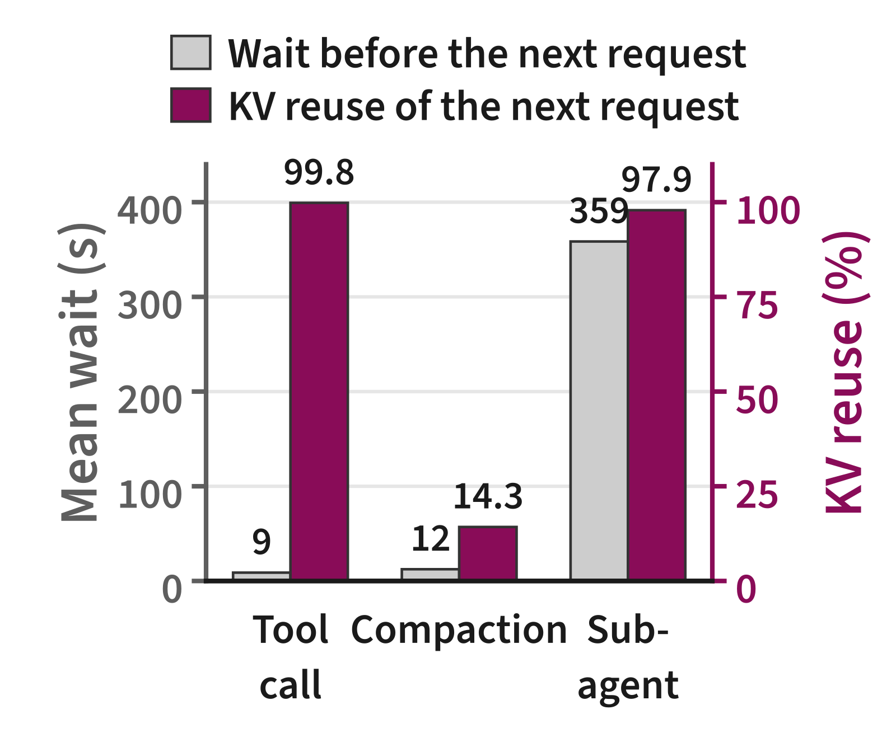
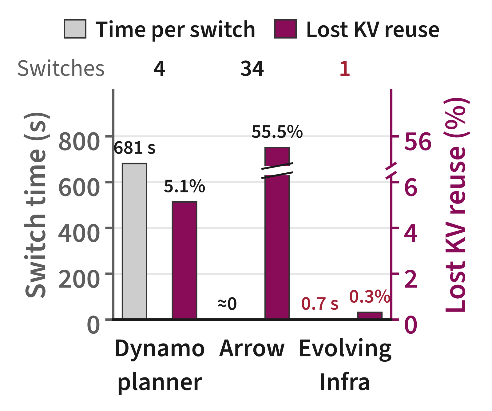
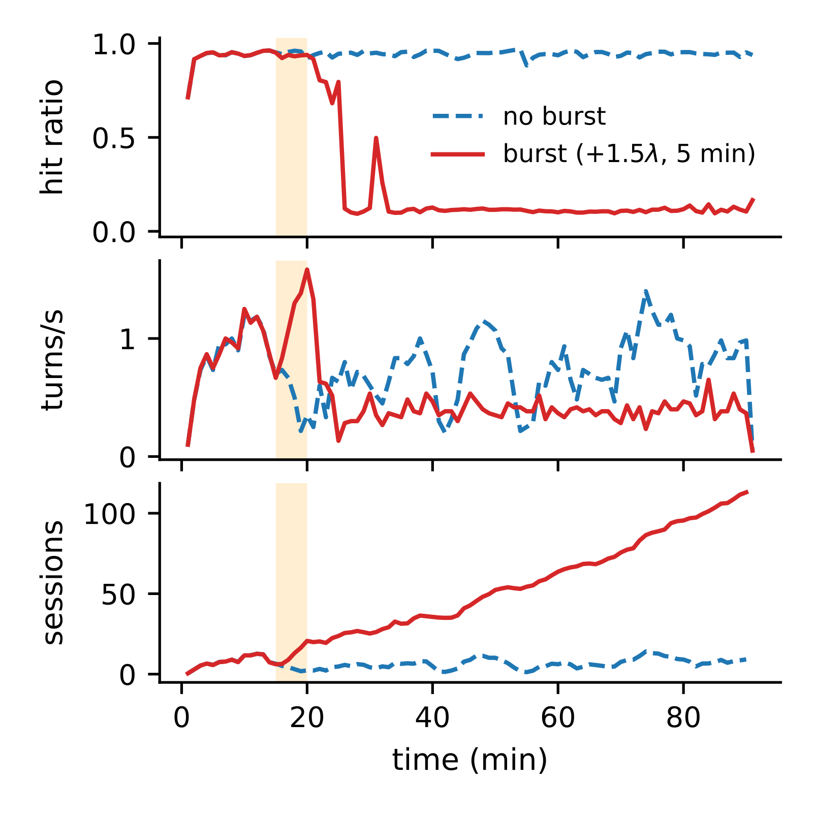

目录 · 7 节
1同一个集群，几小时内要换好几种算力配比2现有系统在三处算错账3任何节点都能当两种角色，KV 放在共享池里4每块 KV 记一个数：还有几个活跃 branch 在用5Planner 按平均工作量选配比，不追短突发6切换从 754 s 降到 6.2 s7边界在 TTFT、harness 和硬件Evolving Infra 这篇论文的主张是：服务 agent 时，集群里多少台机器处理输入、多少台生成输出，KV 该留哪些，都要跟着负载在线改。能改得起的前提，是先把「节点当什么角色」和「KV 存在哪」拆开。
同一个集群，几小时内要换好几种算力配比
Agent 按步执行：每一步发一次模型请求，触发若干工具调用，harness（驱动 agent 的外层程序，比如 Claude Code 本身）再把结果拼回上下文。所以相邻两步的 prompt 通常共享很长的前缀，前一步算好的 KV cache 下一步可以直接复用。
现在的大规模部署多用 PD（prefill 与 decode）分离：一部分节点只做 prefill（把新输入算成 KV），其余节点只做 decode（逐 token 生成）。论文用 xPyD 表示配比，例如 4P5D 就是 9 个节点里 4 个做 prefill、5 个做 decode。难处在于，不同 agent 对两边的需求差得很远。做数学证明的 Putnam agent 输出长推理，偏 decode，最佳静态配比是 2P7D；操作电脑的 OSWorld agent 每步追加一张截图，偏 prefill，最佳是 6P3D。集群里两类 agent 的比例还会随时间变。

第二个难处在 KV 该留哪些。直觉上越久没用的 KV 越该清，但 agent 的复用和时间远近无关。作者在真实 Claude Code 用户 trace（下文简称 CC）里量了 sub-agent 和 compaction（harness 把长历史压成摘要）之后的复用率。sub-agent 跑了 359 s 回来，下一请求仍有 97.9% 的 prompt 能命中已有 KV；compaction 后只隔 12 s，命中只有 14.3%。这说明访问时间远近预测不了 KV 还有没有用，因为决定复用的是 harness 对上下文做了什么。

把这两个难处放进一个贯穿全文的例子（示意）。集群 9 个节点，当前 4P5D。论文把一条有自己请求序列、跑完才结束的上下文叫 branch。agent 甲的主 branch 记作 B1，100K token 的 KV 在 prefill 节点 P1 上；B1 派出 sub-agent B2 去读代码，自己已经等了 6 分钟。agent 乙的 branch B3 12 s 前刚做完 compaction，80K 历史压成了 5K 摘要。这时负载变得更偏 decode，最好改成 3P6D，P1 就是那台要改成 decode 的节点。
现有系统在这个例子里各错一处。Dynamo 的 planner 改配比要重启 P1 上的 worker，P1 几分钟不服务。Arrow 原地切换，但 P1 的 KV 只登记在 P1 本地，P1 变成 decode 后 B1 那 100K 前缀别的 prefill 节点读不到，只能重算。驱逐用 LRU 的话，B3 的 80K 旧历史 12 s 前还碰过，会被留下；B1 的前缀 6 分钟没动，会先被清掉。这正好反了。
现有系统在三处算错账
作者在 9 个 4×GB300 节点上跑 CC 负载，把上面的错误量成了数字。第一处是切换代价：Dynamo 每次切换平均 681 s，节点这段时间不服务。Arrow 切换几乎不花时间，但 34 次切换后丢掉了 55.5% 的可复用 KV，因为被切走节点上的 KV 再也读不到。
这里的指标叫 lost KV reuse，定义为 1−h/h。h 是实际命中率，h 是「缓存无限大、所有节点共享、从不切换」时的命中率，所以它衡量的是本可以命中却没命中的比例。

第二处是算力需求估错了方向。Arrow 用完整输入长度估 prefill 时间，把已命中的前缀也算成工作，一路加 prefill 节点到 8P1D。Dynamo 看排队长度和 KV 利用率，agent 的长上下文让 decode 节点 KV 利用率一直很高，它又一路加 decode 到 2P7D。两者吞吐分别比最佳静态配比（4.9 req/s）低 65% 和 49%。
第三处是路由和驱逐误判复用。cache-aware 路由把一个 agent 和它分出去的 branch 都压到持有前缀的少数节点上，P95 TTFT 27 s；偏负载均衡的 Dynamo 路由让别的节点重算前缀，P95 TTFT 65 s。LRU 驱逐清掉等工具或 sub-agent 的 branch 的 KV，这类驱逐占 Dynamo lost KV reuse 的 39%。
作者把根源归成两条：节点角色和 KV 位置绑在一起，换角色就丢 KV；planner、router、驱逐三处都靠排队长度、输入长度、访问时间这类粗信号。下面三节按这两条拆解。
任何节点都能当两种角色，KV 放在共享池里
先看一个请求在 Evolving Infra 里怎么走。
| 步骤 | 谁来做 | 做什么 | 产出 |
|---|---|---|---|
| 1 | harness | 给请求打上 branch ID；branch 结束时上报 | 带 B1/B2 标签的请求 |
| 2 | router | 查集群级 KV directory，预测每个 prefill 节点的 TTFT，选最小的 | 目标节点，例如 P2 |
| 3 | P2 | 请求排队时，用 RDMA 从 P1 的 host memory 把 B1 前缀拉过来、装进 GPU | 拉取大多与排队重叠 |
| 4 | P2 → decode 节点 | prefill 后把 KV 经 GPU 间传输交给 decode 节点 | 生成结果 |
| 5 | planner | 每 600 s 窗口评估一次配比，显著更好才切 | 新的 xPyD |
角色和 KV 的拆分靠两件东西。symmetric engine 在 SGLang 上改成一个调度循环同时服务两种 phase，KV 传输支持任意两节点、任意方向。planner 改某个节点的角色时，router 只是改发给它的请求类型，引擎不重启。共享 KV 池把所有节点的 host memory 拼起来，每个节点写 GPU 显存的同时也写进本机 host memory。
回到例子：P1 改成 decode 时，router 先把 P1 排队的请求挪到别的 prefill 节点，等 P1 手上的请求跑完就切。B1 的 100K 前缀留在 P1 的 host memory 里，下一次 B1 请求落到 P2，P2 从 P1 拉过去。Dynamo 的代价是停机，Arrow 的代价是丢 KV，把 KV 搬出节点本地状态，两样都避开了。
拉取会不会拖慢 prefill？HiCache（SGLang 的分层 KV 缓存）是 prefill 开始后逐层把 KV 装进 GPU，装载时间直接叠在 prefill 上。Evolving Infra 改在请求排队期间拉取整段 KV、装进 GPU，所以拉取大多能和排队重叠。剩下的 host→GPU 拷贝仍计入 prefill 时间模型，拉取超出排队的部分也计入路由的 TTFT 预测。
每块 KV 记一个数：还有几个活跃 branch 在用
KV 能跨节点读之后，还要决定留哪些。router 维护一个集群级 KV directory：一棵前缀树，记录每个 KV 块在哪个节点的显存或 host memory 里，并给每个节点上的每个块记一个计数，表示还有几个活跃 branch 引用它。计数随 harness 的操作变。fork 或派 sub-agent 时，新 branch 用到的块各加 1；同一 branch 只追加内容时，只给新追加的块加 1。compaction 改写上下文时，旧上下文丢掉的块减 1、新加入的块加 1；branch 结束时释放它的全部计数。
例子里，directory 在这一刻大致是这样（示意）：
| KV 块 | 所在节点 | 还在用它的 branch | 计数 | 上次访问 |
|---|---|---|---|---|
| B1 的 100K 前缀 | P1 | B1（等 sub-agent） | 1 | 6 分钟前 |
| B1 前缀的副本 | P2 | B2（sub-agent 在跑） | 1 | 刚刚 |
| B3 压缩前的 80K 历史 | P3 | 无 | 0 | 12 s 前 |
| B3 的 5K 摘要 | P3 | B3 | 1 | 刚刚 |
驱逐按 (计数是否大于 0, 上次访问时间) 升序：先清计数为 0 的块，组内按 LRU；有引用的块只在零引用块清完之后才动。表里第三行的键是 (0, 12 s 前)，第一行是 (1, 6 分钟前)，0 排在 1 前面，所以先清 B3 的旧历史。等 B2 跑完、harness 上报结束，第二行也归零，可以清了。
为什么不让 router 自己从 token 推断？因为只看 prompt 文本，router 分不清 B1 是在等 sub-agent 回来，还是已经结束、不会再发请求，这件事只有 harness 知道。KV 传输也会动计数。同为 prefill 的两节点之间搬 KV，计数跟着搬到目标，源副本归零可清；prefill 和 decode 之间搬，两边都保留，因为 branch 下一步两个 phase 都要用。这样每个活跃 branch 在每个 phase 最多只占一份副本。
有了快速拉取和这套驱逐，router 就不必把请求压在持有前缀的节点上。它对每个 prefill 节点预测 TTFT：当前 batch 剩余时间，加队列里各请求的服务时间，加本请求的服务时间，再给拉取超出排队的部分和多出的副本收一点代价。例子里 B1、B2 的后续请求可以分到不同节点，不会全堆在 P1。
Planner 按平均工作量选配比，不追短突发
配比怎么选，关键是先算准一个请求要多少 prefill 和 decode 工作。为什么不用输入长度？设一个 agent 请求有 128K 已缓存前缀、新增 8K token（示意）。按全长算是 136K token 的 prefill。实际上线性层只处理 8K 个未缓存 token；注意力的 query–key 对数是 8K×128K + 8K×8K/2，前一项是后一项的 32 倍。按全长算，128K 已缓存前缀也被当成要重算的 token，prefill 需求被高估，Arrow 就是这样一路加 prefill 节点的。
论文的 prefill 迭代时间模型因此把两种 token 分开：固定开销，加每个未缓存 token 的线性层时间，加每个 query–key 对的注意力时间，加从 host memory 恢复每个 token 的时间。decode 时间按运行请求数和 MoE 被选中专家的期望比例建模。两个模型的系数在 warmup 期间在线拟合后冻结，不到 1 分钟就收敛。在 GB300 上，拟合范围之外的预测平均误差是单请求 4.2%、2–8 个请求的 batch 6.3%。这说明只分开已缓存和未缓存 token 的简单模型，误差已经在个位数。
集群吞吐取两边较慢的一边：min(所有 prefill 节点的吞吐和, 所有 decode 节点的吞吐和)。每个节点的吞吐是 1 除以一个请求占用它的时间。prefill 节点把窗口内平均每请求工作量代入上面的迭代模型；decode 节点的 batch 取窗口内 decode 中的平均请求数除以 decode 节点数。用平均工作量而不用排队长度，是因为几个 sub-agent 同时启动只会让队列短暂变长，平均每请求工作量几乎不动。 Hoot 说

四步都是示意数字，只演示换算关系；每轮耗时本身来自在线拟合的 decode 迭代时间模型。
出处
论文 §5.1 式 (2)(4)：一条请求要 t_out/t_acc 轮，B 条请求共用每一轮，占用 T_iter(B)·t_out/(B·t_acc)，μ_D = 1/占用；§5.2 式 (5)：Θ = min(Σμ_P, Σμ_D)，decode batch B = q̄/|D|切换仍有代价，所以 planner 还做显著性检验。600 s 窗口切成 10 段，每段测一次平均工作量和 decode 中的平均请求数，代入上式算候选配比与当前配比的吞吐差，平均增益超过 2 倍标准误才算合格。示意：平均增益 0.3 req/s，标准差 0.5，标准误约 0.5/√10≈0.16，两倍约 0.32，比 0.3 大，不切。每次切换后还跳过 120 s。
切换从 754 s 降到 6.2 s
实验在 9 个 4×GB300 节点（36 张 GPU）上，GLM-5.2 跑 Putnam 和 CC，Kimi K2.6 跑 OSWorld。每次跑先 warmup 30 分钟再测 1 小时，固定并发，结束一个 agent 补一个。基线 Dynamo 从 6P3D 出发，所有基线都配了 cache-aware 路由、HiCache LRU 和同样去重过的 host memory。
| 场景 | 对照 | Evolving Infra |
|---|---|---|
| 稳态，3 种负载 × 3 档并发 | Dynamo | 吞吐 1.10–2.73×；lost KV reuse 降 81–95%；平均 E2E 降 1.15–4.12× |
| 每种负载的最低并发 | SGLang 最佳静态配比 | 吞吐 0.98–1.38× |
| 单次切换，9 个设置平均 | Dynamo 重启 754 s | 6.2 s，期间节点继续服务 |
| 负载从 Putnam 漂到 OSWorld | Dynamo 83.1 s / 静态 5P4D 51.5 s | 平均 E2E 38.7 s |
| CC 126 agents，固定 4P5D，不开配比调整 | 最佳静态 4P5D，4.57 req/s | 6.27 req/s |
| 同上，开配比调整 | 同上 | 6.25 req/s |
前三行回答「拆开以后切换是否便宜」：每次切换从十几分钟降到几秒，KV 也没丢。lost KV reuse 是相对降幅，Dynamo 本身只丢 1.85–7.78%，不能读成命中率提高了 81–95 个百分点。
第四行回答「在线调配比在负载漂移时值不值」：配比跟上了每 10 分钟窗口的最佳值，OSWorld 段停在 8P1D，平均 E2E 比 Dynamo 低 2.15×，比静态 5P4D 低 1.33×。
后两行是 CC 126 agents、起点已是最佳静态 4P5D 时的消融。不开配比调整，只靠共享池、异步拉取和计数驱逐加路由，吞吐是最佳静态配比的 1.37×；再开配比调整，吞吐只低 0.3%。
这说明已经处在最佳配比时，开启在线调整几乎不损失吞吐。
作者另做了初始配比的敏感性实验：CC 126 agents 从 3P6D 到 6P3D 四种配比出发，平均 E2E 最多差 1.8%，四次都收敛到 4P5D。这说明 planner 不需要人先 profile 出好配比；附录估算，离线 profile 一次 3 小时 CC trace 在 256 GPU 上要 10,752 GPU-hours。
边界在 TTFT、harness 和硬件
第一，planner 优化的是吞吐，不是尾延迟。偏 decode 的 Putnam 上它只留 1–2 个 prefill 节点，224 和 288 agents 时 P95 TTFT 比 Dynamo 还高。
第二，计数要 harness 配合。例子里如果 harness 不上报 B2 结束，P2 上那份副本的计数就一直是 1，不会被优先清掉。CC 实验是用前缀树回放录制的 trace，输出长度和工具耗时都是录制值，不是真实运行的 agent。
第三，「KV 容量不是瓶颈」有前提。作者和 ThunderAgent（等工具时暂停 agent 的方案）比，后者一次也没暂停，吞吐是 cache-aware 的 0.95×，因为活跃 agent 的 KV 峰值只占容量 86%。这依赖 GB300 的 CPU–GPU 互联、GLM-5.2 这类每 token KV 很小的模型，以及去重后的 host memory。这组对比和附录里其他几组补充实验一样，每个配置只跑一次，没有方差。
回到 P1：它从 prefill 改成 decode 只要几秒，B1 的 100K 前缀还留在池里；B3 的旧历史计数为 0，先被清掉。配比能跟着负载在线调，是因为节点角色和 KV 位置先拆开了；KV 留哪些，按还有没有活跃 branch 在用来定。
读完这篇，你觉得
夜读鸮记下了，谢谢你的反馈。
点一下即可，无需登录；再点一次撤回。只统计匿名次数，不记录你是谁。
相关论文RELATED
 Infra · 2026-10-26KVStream: Adaptive Parallel Storage Management for KV Caching in Large-Scale LLM Serving长上下文推理会反复用到同一段前缀，比如系统提示、整份文档、代码仓库和多轮会话历史。这些前缀的 KV cache 早已放不进 GPU 显存和主机内存，只能落到硬盘上，下次命中再读回来，读盘就卡在了每一步推理的关键路径上。现有系统只读节点本地的 NVMe，集群早已挂载的并行文件系统却几乎闲着。这篇论文做了 KVStream：每块 KV 在本地盘和共享存储各写一份，读的时候两边同时读，谁先读完谁接着领下一批。接进 LMCache 实测，离线吞吐最高是 LMCache 的 1.49 倍，突发流量下平均 TTFT 最多快 6.1 倍。
Infra · 2026-10-26KVStream: Adaptive Parallel Storage Management for KV Caching in Large-Scale LLM Serving长上下文推理会反复用到同一段前缀，比如系统提示、整份文档、代码仓库和多轮会话历史。这些前缀的 KV cache 早已放不进 GPU 显存和主机内存，只能落到硬盘上，下次命中再读回来，读盘就卡在了每一步推理的关键路径上。现有系统只读节点本地的 NVMe，集群早已挂载的并行文件系统却几乎闲着。这篇论文做了 KVStream：每块 KV 在本地盘和共享存储各写一份，读的时候两边同时读，谁先读完谁接着领下一批。接进 LMCache 实测，离线吞吐最高是 LMCache 的 1.49 倍，突发流量下平均 TTFT 最多快 6.1 倍。
Infra · 2026-11-12Bursts That Outlast Themselves: Persistent Degradation in Prefix-Cached Agent Serving给 agent 做推理服务，全靠前缀缓存撑着：命中时每轮只补算新增的内容，没命中就要把几万 token 的上下文整段重算。作者发现这会让服务掉进一个出不来的坏状态。同样的基础流量，只多来几分钟突发请求，vLLM 的缓存命中率就跌到 10% 左右，吞吐减半，突发过去后积压还在涨。原因是一个循环：服务一慢，同时在线的会话变多，它们的上下文加起来超过 KV 池，每个会话的前缀在下一轮之前就被别的会话挤掉，于是每轮都重算，服务更慢。崩了以后只挡新请求，7 次里只救回 1 次；在轮次间隙暂停一部分已在跑的会话，让活跃会话的 KV 总需求不超过池子容量，每次都能在几分钟内恢复。跑 agent 服务时，要按 KV 容量管住已经进来的会话。 Infra · 2026-11-10Inside the Trap: A Renewal Law for Prefix-Cache Collapse in LLM Agent ServingLLM agent 的多轮对话靠前缀缓存省掉重复计算，但这篇论文发现一个陷阱：突然涌进一大批会话后，引擎可能掉进每一轮都不命中缓存的状态，积压再也消化不掉，哪怕这个负载它以前扛得住。作者在两种推理引擎、两种 GPU、两个模型上做了配对测试，200 个会话的突发让 30 次运行全部卡死到结束，没有突发的对照运行则都正常。作者把卡死状态抽象成每轮都不命中的排队模型，算出积压怎样增长。出路也简单：限制同时在跑的会话数，就能在同样负载下把已经卡死的引擎救回来。做 agent 服务，不能只看平均负载，还要防突发把缓存冲垮。
Infra · 2026-11-10Inside the Trap: A Renewal Law for Prefix-Cache Collapse in LLM Agent ServingLLM agent 的多轮对话靠前缀缓存省掉重复计算，但这篇论文发现一个陷阱：突然涌进一大批会话后，引擎可能掉进每一轮都不命中缓存的状态，积压再也消化不掉，哪怕这个负载它以前扛得住。作者在两种推理引擎、两种 GPU、两个模型上做了配对测试，200 个会话的突发让 30 次运行全部卡死到结束，没有突发的对照运行则都正常。作者把卡死状态抽象成每轮都不命中的排队模型，算出积压怎样增长。出路也简单：限制同时在跑的会话数，就能在同样负载下把已经卡死的引擎救回来。做 agent 服务，不能只看平均负载，还要防突发把缓存冲垮。 Infra · 2026-11-04When Cache Pressure Becomes a Trap: Metastability in Agent Serving一阵十分钟的流量高峰，就能让 prefill 和 decode 分离部署的 agent 推理服务一直恢复不了。高峰过去、流量回到原来的水平以后，在 SGLang 上之后一小时的有效吞吐仍下降约 88%，而且故障前利用率和队列长度几乎看不出征兆。背后是一个循环。缓存不够导致重算，调用变慢，会话结束得更晚，在线的上下文更多，缓存就更不够。作者据此做了 Basin，按预估的每个会话最长上下文从一个总额度里预留，额度不够就让新会话先排队。在真实 GPU 上，一个不带预测器的简化原型，有效吞吐已是此前最强方案 Continuum 的 1.20 到 1.70 倍。
Infra · 2026-11-04When Cache Pressure Becomes a Trap: Metastability in Agent Serving一阵十分钟的流量高峰，就能让 prefill 和 decode 分离部署的 agent 推理服务一直恢复不了。高峰过去、流量回到原来的水平以后，在 SGLang 上之后一小时的有效吞吐仍下降约 88%，而且故障前利用率和队列长度几乎看不出征兆。背后是一个循环。缓存不够导致重算，调用变慢，会话结束得更晚，在线的上下文更多，缓存就更不够。作者据此做了 Basin，按预估的每个会话最长上下文从一个总额度里预留，额度不够就让新会话先排队。在真实 GPU 上，一个不带预测器的简化原型，有效吞吐已是此前最强方案 Continuum 的 1.20 到 1.70 倍。 Infra · 2026-11-11RecoGEM: A Serving System for Production-Scale Generative Recommendation生成式推荐让模型像大模型一样逐个生成物品的 SID，按理说 LLM 的推理服务栈可以直接拿来用，实际却跑不好，因为那套系统默认每一步形状相同、注意力开销压在长序列上。快手这篇 RecoGEM 讲清了差别：每条候选只看几个 SID，beam 展开后却有海量独立短序列，长序列 kernel 的固定开销摊不下去。每一步的词表和张量形状也不同，top-k 要选出大批幸存候选，成了关键路径上的重活。他们把步间的候选状态和线上更新交给独立的运行时，引擎按每一步的形状单独编译。线上 OneModel 负载中，单实例超过 1000 QPS，P99 低于 35 毫秒，吞吐是换回统一形状和普通 kernel 的同系统版本的 2.88 倍。评估生成式推荐的上线成本，要看 beam 宽度和候选选择，序列长度不是重点。
Infra · 2026-11-11RecoGEM: A Serving System for Production-Scale Generative Recommendation生成式推荐让模型像大模型一样逐个生成物品的 SID，按理说 LLM 的推理服务栈可以直接拿来用，实际却跑不好，因为那套系统默认每一步形状相同、注意力开销压在长序列上。快手这篇 RecoGEM 讲清了差别：每条候选只看几个 SID，beam 展开后却有海量独立短序列，长序列 kernel 的固定开销摊不下去。每一步的词表和张量形状也不同，top-k 要选出大批幸存候选，成了关键路径上的重活。他们把步间的候选状态和线上更新交给独立的运行时，引擎按每一步的形状单独编译。线上 OneModel 负载中，单实例超过 1000 QPS，P99 低于 35 毫秒，吞吐是换回统一形状和普通 kernel 的同系统版本的 2.88 倍。评估生成式推荐的上线成本，要看 beam 宽度和候选选择，序列长度不是重点。
讨论
欢迎补充实验细节、复现经验或不同看法。需 GitHub 登录。
正在加载讨论…